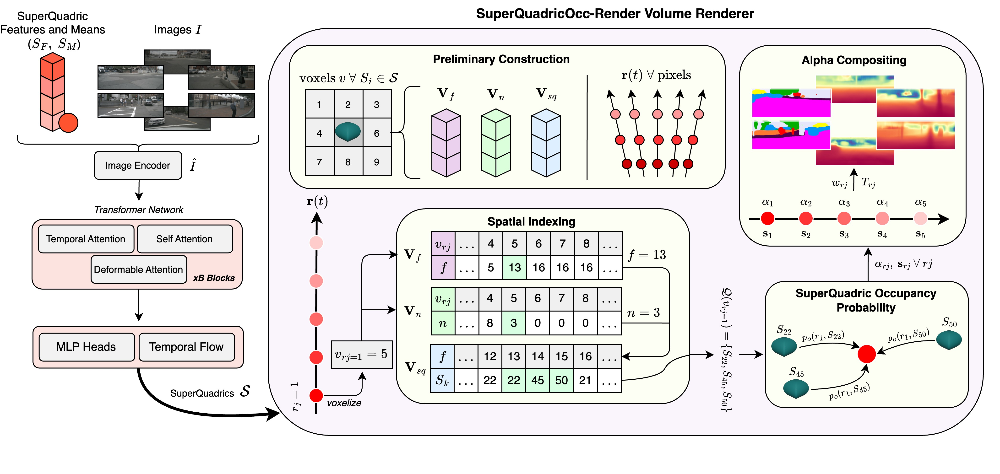
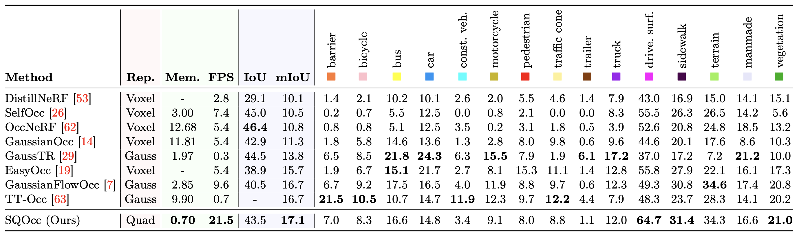

Self-supervision for semantic occupancy estimation is appealing as it removes the labour-intensive manual annotation, thus allowing one to scale to larger autonomous driving datasets. Superquadrics offer an expressive shape family very suitable for this task, yet their deployment in a self-supervised setting has been hindered by the lack of efficient rendering methods to bridge the 3D scene representation and 2D training pseudo-labels. To address this, we introduce SuperQuadricOcc, the first self-supervised occupancy model to leverage superquadrics for scene representation. To overcome the rendering limitation, we propose a real-time volume renderer that preserves the fidelity of the superquadric shape during rendering. It relies on spatial superquadric–voxel indexing, restricting each ray sample to query only nearby superquadrics, thereby greatly reducing memory usage and computational cost. Using drastically fewer primitives than previous Gaussian-based methods, SuperQuadricOcc achieves state-of-the-art performance on the Occ3D-nuScenes dataset, while running at real-time inference speeds with substantially reduced memory footprint.
The transformer network refines superquadric means \( S_M \) and features \( S_F \), which are eventually transformed into full primitives for rendering. In \(\text{render}(\cdot)\), following preliminary construction, we iterate over each ray sample \( r_j \), and query the spatial indexing tensors \( \mathbf{V}_{sq} \), \( \mathbf{V}_{n} \), \( \mathbf{V}_{f} \) to obtain the list of superquadrics \( \mathcal{Q}(v_{r_j}) \). We then compute the ray sample values \( \alpha_{r_j} \), \( \mathbf{s}_{r_j} \), and perform alpha compositing to produce the final semantic render \( \hat{S} \) and depth render \( \hat{D} \). During evaluation, superquadrics \( \mathcal{S} \) are voxelized.

SuperQuadricOcc demonstrates strong semantic occupancy, correctly detecting closeby and far away objects, something previous models struggled with due to biased supervision for regions close to the camera view. For densely packed scenes, the model demonstrates good performance.
For depth and semantic rendering, the model demonstrated good performance as this is the models supervision space. SQOcc-R volume renderer provides accurate and timely renders.
SuperQuadricOcc demonstrated good performance

@article{hayes2025superquadricocc,
title={SuperQuadricOcc: Multi-Layer Gaussian Approximation of Superquadrics for Real-Time Self-Supervised Occupancy
Estimation},
author={Hayes, Seamie and Mohandas, Reenu and Brophy, Tim and Boulch, Alexandre and Sistu, Ganesh and Eising, Ciaran},
journal={arXiv preprint arXiv:2511.17361},
year={2025}
}